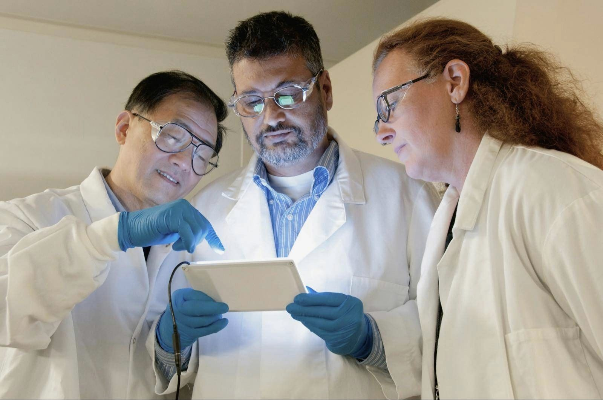
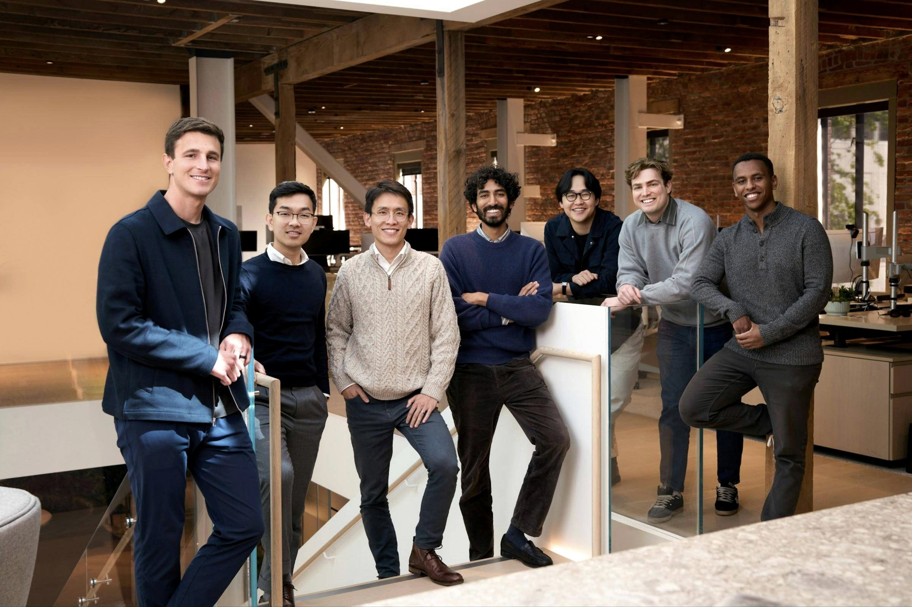

Precision filters for the light that moves AI
Vertex Photonics is a manufacturer of high-precision optical filters and thin-film coatings, covering the spectrum from prototype development to volume production for OEM partners.
- Quality system
- ISO 9001:2015
- Spectral range
- 1260–1700 nm
- Design and production
- Taoyuan, Taiwan
Bandwidth now comes in colors
AI clusters move data between thousands of processors. Over any real distance that data travels as light in optical fiber, and every new generation of optics needs more bandwidth from each fiber.
Sending many wavelengths through one fiber multiplies what it carries. Between data centers the light must be amplified every 50 to 100 km, and amplifiers boost some wavelengths more than others. Our gain flattening filters bring every channel back to the same level.
The part we make: the filter chip
Each filter is a glass chip a millimeter or so across. On one face we deposit a stack of thin layers, two materials in turn. Light reflected inside the stack interferes, so only the designed spectrum gets through.
Interference coating
Dozens to hundreds of layers, each a fraction of a micrometer thick.
Glass substrate
Polished glass that carries the coating.
Anti-reflection coating
Two layers on the back, so the light leaves instead of reflecting back.
AI is our newest focus, not our only one
Custom optical filters and thin-film coatings, built to your target spectrum. We design the layer stack, deposit it and measure every run against the design, from prototype to volume production for OEM partners.
Discuss a specification-
Gain flattening filters (GFF)
Each wavelength passes at its own designed level, so every channel leaves an optical amplifier at the same power.
-
WDM filters for data center optics
Thin-film filter chips that combine and separate wavelengths inside 800G and 1.6T optical transceivers.
-
Bandpass filters
Narrow and wide passbands that let one channel or band through and block the rest.
-
Edge filters
Longpass and shortpass filters with a steep transition between blocked and transmitted light.
-
Dichroic filters and beamsplitters
Split or combine wavelength bands at an angle, designed for the angle and polarization of your system.
-
Mirrors and anti-reflection coatings
High-reflection and AR coatings on standard or customer-supplied substrates.
Near infrared today, more of the spectrum next
Today our filters work from 1260 to 1700 nm, the band of data center and telecom optics. Other bands, from ultraviolet to long-wave infrared, are on our roadmap.
Scroll the spectrum sideways to see every band.
Telecom and data center interconnect
1530–1565 nm, C-band
Our work today
Long-haul, metro and data center interconnect links carry dozens of channels on each fiber and amplify them every 50 to 100 km. Our gain flattening filters keep every channel at the same power after each amplifier.

Made in Taiwan, end to end
Design, coating, measurement, dicing and quality control happen in one place, our facility in Zhongli, Taoyuan. Short feedback loops keep quality consistent from the first prototype to volume runs.
- Quality system
- ISO 9001:2015
- Where we make filters
- Zhongli, Taoyuan
- Order sizes
- Prototype to volume
How a filter is made
- 1
Design
Model the layer stack against the target spectrum, angle of incidence and operating environment.
- 2
Coat
Deposit the layers in vacuum, with tight control of every layer's thickness.
- 3
Measure
Check each coating run by spectrophotometry against the design curve.
- 4
Dice
Cut coated wafers into individual filter chips.
- 5
Quality control
Inspect and test the finished chips against the specification, and release them under our ISO 9001:2015 quality system.
Join a team that pushes the frontier of optical technology
We are engineers who design, coat and measure optical filters in our own facility. The filters we are building now go into the networks behind AI. Here you own real problems, from the first simulation to the parts that ship.

Work you can hold
Your designs become physical parts on our own line, measured and shipped to customers.
Early and growing
We are a young company. The engineers who join now shape how we work and what we build next.
At the edge of optics
Filters for 1.6T data center links demand some of the tightest tolerances in thin-film optics.
Open positions
No role that fits yet? Send your CV and tell us what you want to work on.
Talk to us
Tell us what you are working on. The right person on our team will reply.
Careers
Open roles and open applications.
Customers and partners
Specifications, samples and quotes.
Investors and press
Company overview and media requests.
Facility
Vertex Photonics Inc.No. 8-3, Nanyuan 2nd Rd.
Zhongli Dist., Taoyuan City 320023
Taiwan
桃園市中壢區南園二路8之3號
Follow
Certified
ISO 9001:2015 quality management